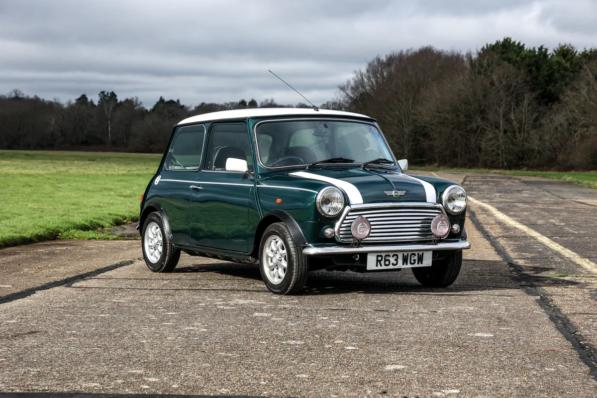
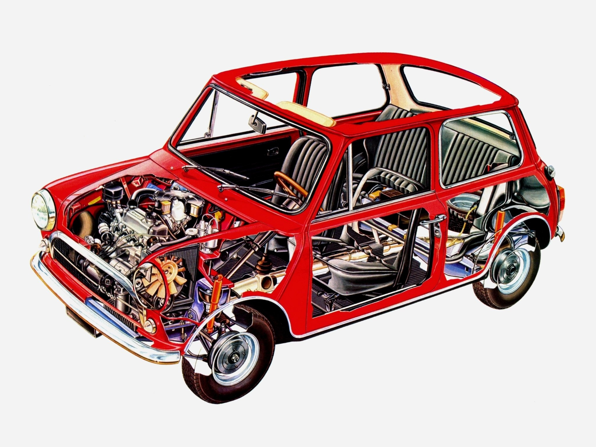
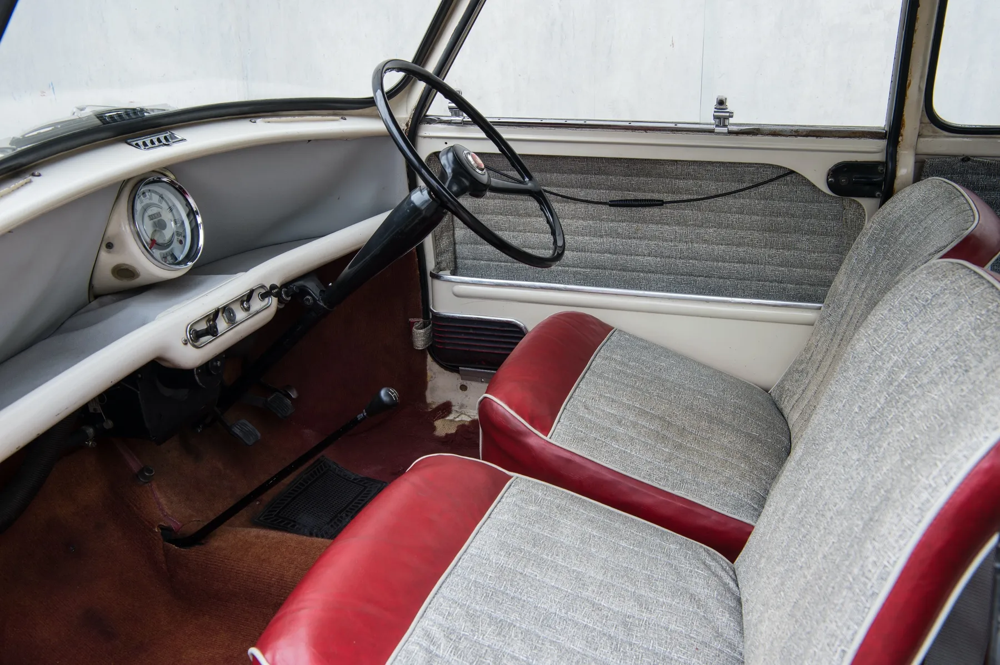
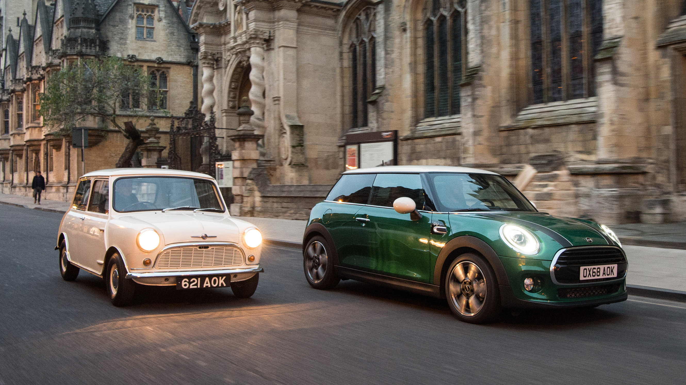

The Mini Cooper
The original Mini was introduced in 1959 by the British Motor Corporation (BMC), designed by Sir Alec Issigonis as an answer to the fuel shortages of the time. Compact, affordable, and incredibly space-efficient, the Mini quickly became a symbol of British ingenuity. But it was the collaboration with racing legend John Cooper that transformed the humble Mini into a performance icon.
The Birth of the Mini Cooper

In the early 1960s, John Cooper saw the potential of the Mini's light weight and responsive handling for motorsport. With upgraded brakes, a tuned engine, and sportier suspension, the Mini Cooper and Mini Cooper S were born — small cars that could punch far above their weight. These tiny machines shocked the racing world by winning the Monte Carlo Rally multiple times during the 1960s.
Iconic Design and Compact Engineering

The Mini's revolutionary front-wheel-drive layout and transverse engine allowed for maximum cabin space in a tiny footprint. Its charming, boxy design became instantly recognizable, and it was adored by everyone from city drivers to rock stars. The Cooper versions added sporty details like wider wheels, twin fuel tanks, and distinctive badging, all while keeping the car's friendly personality intact.
Fun Behind the Wheel

What the classic Mini Cooper lacked in straight-line speed, it made up for in agility and joy. With go-kart-like steering and a low center of gravity, it delivered an engaging and playful driving experience. Whether navigating tight corners or zipping through traffic, the Mini Cooper brought a sense of fun and confidence that larger cars simply couldn't match.
Enduring Cultural Icon

The classic Mini Cooper became much more than just a car — it became a cultural icon. It starred in movies like The Italian Job, captured the hearts of enthusiasts worldwide, and remained in production (in various forms) for over four decades. Today, classic Mini Coopers are highly sought after by collectors and remain a symbol of clever design, motorsport heritage, and pure driving enjoyment.